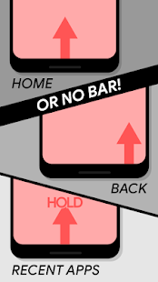
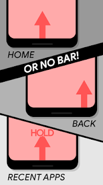

THIS APP IS NOT COMPATIBLE WITH ANDROID 11 AND LATER! NAVIGATION GESTURES WILL NOT BE RECEIVING ANY MORE UPDATES!
Jealous of the cool new gesture navigation features on newer phones? With Navigation Gestures, you don't have to buy a new phone or wait for the next Android update to get swipe gesture controls. Navigation Gestures brings swipe gestures to any Android device! Replace the navigation bar buttons and get gesture controls with Navigation Gestures!
Best of all, Navigation Gestures can completely hide the stock navigation bar without root! This is the first gesture control app with this feature.
Swipe left, right, up, or down. Swipe up and hold. Tap. Double tap. Long press. Go crazy and split the pill in 3! There's a lot of ways you can use the gesture bar to control your phone. Don’t like how the gesture pill looks? Customize it!
Here's everything you can do:
Gestures
Taps
- Single tap - Double tap - Tap and hold (long press)
Swipes
- Swipe up and hold - Swipe left - Swipe left and hold - Swipe right - Swipe right and hold - Swipe up - Swipe down
Split Pill
- Swipe up from left - Swipe up and hold from left - Swipe up from center - Swipe up and hold from center - Swipe up from right - Swipe up and hold from right
Actions
Free
- Home - Back - Recent apps - Toggle split-screen (Android Nougat+) - Open previous app (Android Nougat+) - Open Assistant - Hide pill - Toggle navigation bar
Premium
- Pull down notifications - Pull down quick settings - Open power menu - Skip to previous media track - Skip to next media track - Play/pause current media track - Show keyboard switch dialog - Launch app - Lock screen - Take screenshot - Kill all background apps - Rotate screen - Toggle flashlight - Toggle Bluetooth - Toggle WiFi - Toggle battery saver - Toggle screen timeout - Open volume panel - Launch Activity - Launch Shortcut - Trigger Tasker Event - Send Intent - Toggle auto brightness - Lower brightness - Raise brightness - Open app drawer - Lower volume - Raise volume - Cycle ringer mode - Toggle media volume mute - Kill all background apps
Root
- Hold back - Go forward - Open menu - Kill current app - Accessibility button (Android Oreo+) - Choose accessibility button (Android Oreo+) - Send keycode - Send long-press keycode - Send double-press keycode
Appearance (all free)
- Customize pill color - Customize pill transparency - Customize pill border color - Customize pill corner radius - Customize pill width/height - Customize pill X/Y position
Behavior (all free)
- Blacklist pill/show NavBar in selected apps - Customize sensitivity - Customize vibration duration - Customize animation duration - Automatically hide pill after delay - Many more
TROUBLESHOOTING:
Setting up ADB: https://www.xda-developers.com/install-adb-windows-macos-linux/
- If your system navigation bar keeps hiding itself, run this ADB command:
adb shell settings delete global policy_control
Or, hit the "PROBLEMS?" button on the main screen and select the option that describes this issue.
- If you uninstalled the app without turning off "Hide Navigation Bar," run this ADB command:
adb shell wm overscan reset
- If your lock screen icons are cut off, go to Settings>>Behavior>>Blacklisting and enable Don't Hide NavBar on Lock Screen
Please visit this page for more details on the latest release and to find answers to frequently asked questions.
ЭТО ПРИЛОЖЕНИЕ НЕ СОВМЕСТИМО С ANDROID 11 и более поздних версий! НАВИГАЦИОННЫЕ ЖЕСТЫ НЕ ПОЛУЧАЮТ НИКАКИХ ОБНОВЛЕНИЙ!
Завидуете новым крутым функциям навигации с помощью жестов на новых телефонах? С помощью жестов навигации вам не нужно покупать новый телефон или ждать следующего обновления Android, чтобы получить управление жестами смахивания. Жесты навигации позволяют использовать жесты смахивания на любом устройстве Android! Замените кнопки панели навигации и получите управление жестами с помощью жестов навигации!
Лучше всего то, что жесты навигации могут полностью скрыть стандартную панель навигации. без рута! Это первое приложение для управления жестами с этой функцией.
Проведите пальцем влево, вправо, вверх или вниз. Проведите вверх и удерживайте. Кран. Двойное нажатие. Долгое нажатие. Сойди с ума и раздели таблетку на 3 части! Есть много способов использовать панель жестов для управления телефоном. Не нравится, как выглядит таблетка для жестов? Настройте это!
Вот все, что вы можете сделать:
Жесты
Отводы
- Одно нажатие - Двойное нажатие - Нажмите и удерживайте (долгое нажатие)
Смахивания
- Проведите вверх и удерживайте - Проведите пальцем влево - Проведите влево и удерживайте - Проведите вправо - Проведите вправо и удерживайте - Проведите вверх - Проведите вниз
Разделенная таблетка
- Проведите вверх слева - Проведите вверх и удерживайте слева - Проведите вверх от центра - Проведите вверх и удерживайте от центра - Проведите вверх справа - Проведите вверх и удерживайте справа
- Уведомления в раскрывающемся меню - Вытяните быстрые настройки - Открыть меню питания - Перейти к предыдущей медиа-дорожке - Перейти к следующей медиа-дорожке - Воспроизвести / приостановить текущий медиа-трек - Показать диалог переключения клавиатуры - Запустить приложение - Экран блокировки - Сделать снимок экрана - Убить все фоновые приложения - Повернуть экран - Переключить фонарик - Переключить Bluetooth - Переключить Wi-Fi - Переключить режим экономии заряда батареи - Переключить тайм-аут экрана - Открытая панель громкости - Запуск активности - Запустить ярлык - Триггерное событие Tasker - Отправить намерение - Переключить автояркость - Более низкая яркость - Поднять яркость - Открыть ящик приложения - Меньшая громкость - Увеличить громкость - Циклический режим звонка - Переключить отключение звука мультимедиа - Убить все фоновые приложения
Корень
- сдерживаться - Иди вперед - Открыть меню - Убить текущее приложение - Кнопка доступности (Android Oreo +) - Выберите кнопку доступности (Android Oreo +) - Отправить ключевой код - Отправить долгое нажатие клавишного кода - Отправить код двойного нажатия
Внешний вид (все бесплатно)
- Настроить цвет таблетки - Настроить прозрачность таблетки - Настроить цвет границы таблетки - Настроить радиус угла таблетки - Настроить ширину / высоту таблетки - Настроить положение таблетки X / Y
Поведение (все бесплатно)
- Таблетка из черного списка / отображение NavBar в выбранных приложениях - Настроить чувствительность - Настроить продолжительность вибрации - Настроить продолжительность анимации - Автоматически скрывать таблетку после задержки - Многое другое
- Если ваша системная панель навигации продолжает скрывать себя, запустите эту команду ADB:
настройки оболочки adb удалить global policy_control
Или нажмите "ПРОБЛЕМЫ?" на главном экране и выберите вариант, описывающий эту проблему.
- Если вы удалили приложение, не отключив «Скрыть панель навигации», запустите эту команду ADB:
adb shell wm overscan сброс
- Если значки на экране блокировки обрезаны, перейдите в «Настройки» >> «Поведение»> «Черный список» и включите параметр «Не скрывать панель навигации на экране блокировки».
Посетите эту страницу , чтобы получить дополнительные сведения о последней версии и найти ответы на часто задаваемые вопросы.
 
